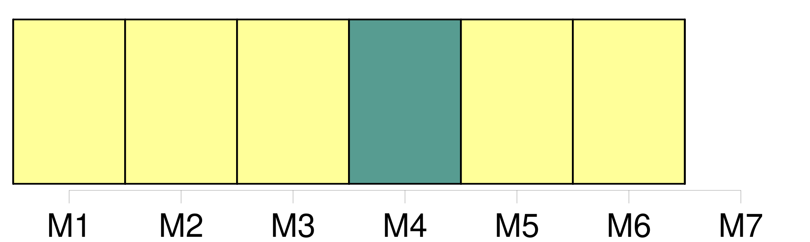
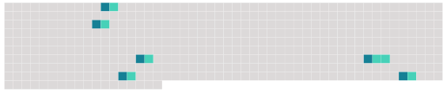

Longueur nb maillons : 6 mentions |
 |
L'activité, toutefois, est très limitée : l'auberge [du Ballon] est fermée jusqu'à mi-janvier et mardi, la Chaumière et le magasin de souvenirs des démineurs avaient tiré le rideau. [3 phrases] A la Gentiane, fidèle au poste dans la cabane en bois des accompagnateurs en montagne [du Ballon] , Jean-Louis Fretti lit et note sur son journal les températures et le temps de chaque jour. [13 phrases] En attendant, comme tout le monde [au Ballon] , Jean-Louis Fretti lève les yeux au ciel : « Il faudrait tout de même que cela se lève... [1 phrases]
Philippe PIOT [3 phrases]
Pourtant, mardi, il y avait bien quelques randonneurs, courageux ou inconscients, à passer devant la ferme-auberge [du Ballon] , les visages figés par la pluie cinglante et les jeans gorgés d'eau. [1 phrases]
Le soleil, c'est l'or [du Ballon] » résume Thierry Jeanroy, dont le bar des Démineurs est installé à cheval entre Vosges et Territoire de Belfort. |
 |
Il est possible de télécharger la ressource sur la page Ortolang |
Si vous avez des questions ou vous voyez des erreurs, merci d'envoyer un mail à silvia.federzoni89@gmail.com |